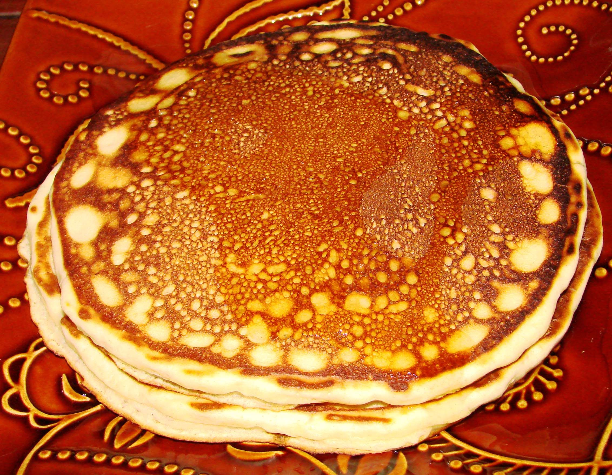

Delicious Pancake

I love crêpes because of their delicate texture and versatility, making them perfect for both sweet and savory flavors. Their thin, light consistency allows for endless creative fillings, from fresh fruits and chocolate to cheese and ham. The artistry in making and folding them adds an elegant touch that showcases both skill and passion for culinary craftsmanship.
Crêpe Pancake Ingredients
- 1 cup all-purpose flour
- 2 eggs
- 1/2 cup milk
- 1/2 cup water
- 1/4 teaspoon salt
- 2 tablespoons melted butter
Step-by-Step Cooking Instructions
- In a mixing bowl, whisk together the flour, eggs, milk, water, salt, and melted butter until smooth.
- Heat a lightly greased non-stick pan over medium heat.
- Pour about 1/4 cup of batter into the pan, swirling it to spread evenly.
- Cook for about 1-2 minutes until the edges lift and the bottom is lightly golden.
- Flip the crêpe and cook for another 30 seconds.
- Remove from the pan and repeat with the remaining batter.
- Fill with your favorite sweet or savory ingredients and enjoy!
How to Make Crêpe Pancakes
Jump to Ingredients |
Jump to Instructions
Crêpe Pancake Ingredients
- 1 cup all-purpose flour
- 2 eggs
- 1/2 cup milk
- 1/2 cup water
- 1/4 teaspoon salt
- 2 tablespoons melted butter
Step-by-Step Cooking Instructions
- In a mixing bowl, whisk together the flour, eggs, milk, water, salt, and melted butter until smooth.
- Heat a lightly greased non-stick pan over medium heat.
- Pour about 1/4 cup of batter into the pan, swirling it to spread evenly.
- Cook for about 1-2 minutes until the edges lift and the bottom is lightly golden.
- Flip the crêpe and cook for another 30 seconds.
- Remove from the pan and repeat with the remaining batter.
- Fill with your favorite sweet or savory ingredients and enjoy!
Watch a Video Tutorial
For a step-by-step video guide, check out this tutorial:
Watch on YouTube
Back to Top